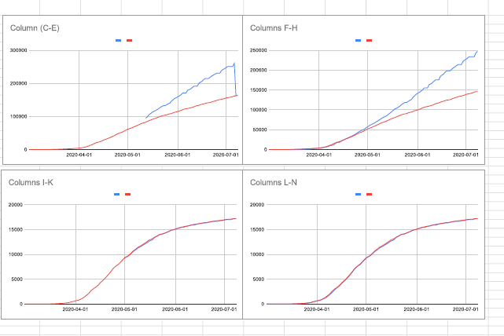

[RI] 7/8 now provides tests & negatives in people in addition to specimens. Backfill of full data series
We can backfill specimens information for RI and also update the way "Negative"s are reported
Link to datasource: https://docs.google.com/spreadsheets/d/1c2QrNMz8pIbYEKzMJL7Uh2dtThOJa2j1sSMwiDo5Gz4/edit#gid=1592746937
Comments
muamichali commented on July 8, 2020 at 9:11 pm

ri_backfill.zip
Updated the following columns:
totalTestsViralpositiveTestsViralnegativeTestsViralpositiveCasesViraltotalTestResultspositivenegativeThe attached file shows the before/after values.
Notice RI is now publishing full data about specimens (total number of tests, with a breakdown to positive and negative results). Additionally, RI publishes unique people tested, including people with positive and negative results. This is now used as the source for
positiveCasesViral,positiveandnegativeAPI fields.